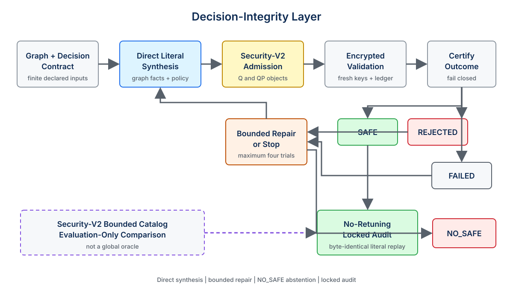
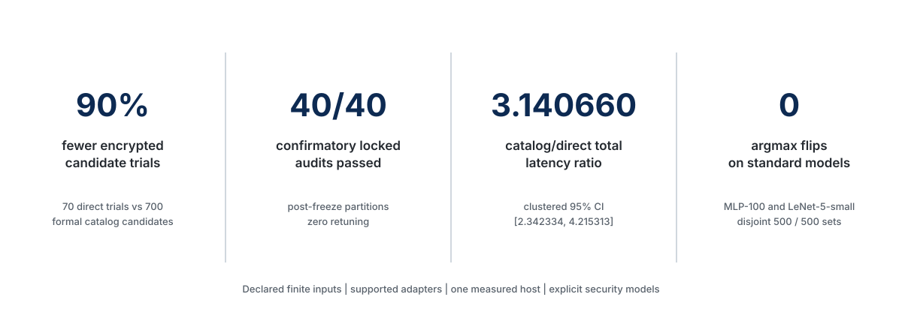

결정 무결성을 고려한 CKKS 실행 구성의 직접 합성과 검증.
English | 한국어

빠른 시작 · 아키텍처 · 결과 · 재현성 · 주장 범위 · 인용
| 암호화 후보 trial 90% 감소 | 고정 감사 40/40 | catalog/direct 비율 3.140660 | 다중 클래스 argmax flip 0건 |
|---|---|---|---|
| direct 70 / catalog 700 | confirmatory, 재튜닝 없음 | 95% CI [2.342334, 4.215313] | MLP-100 및 LeNet-5-small |
결과는 선언된 유한 입력, 지원 어댑터, 단일 측정 호스트와 명시된 보안 모델의 범위에 한정됩니다.
FlipGuard는 명시적인 결정 무결성 계약에 따라 CKKS 실행 구성을 직접 합성하고 검증하는 프레임워크입니다. 단순히 수치 점수만 비교하지 않고 최종 threshold 또는 argmax 결정을 후보 승인 대상으로 다룹니다. 내장 provider는 지원되는 그래프 사실에서 CKKS literal을 만들고, 암호화 검증과 제한적 수리를 거쳐 SAFE, REJECTED, FAILED, NO_SAFE를 판정합니다. 선택한 literal은 분리된 locked audit에서 재튜닝 없이 그대로 재생합니다. Security-V2 준수 bounded catalog는 평가용 비교 경로이며 global oracle이 아닙니다.
직접 합성 · 제한적 수리 · NO_SAFE 거부 · 무재튜닝 고정 감사
왜 FlipGuard인가?
근사 동형암호인 CKKS는 연산 과정에서 수치 오차를 발생시킵니다. 실행에 성공한 구성도 점수를 threshold 반대편으로 옮기거나 최대 logit을 바꿀 수 있습니다. 기존 구성 도구는 깊이, scale, 오차, bootstrapping 또는 latency를 주로 최적화합니다. FlipGuard는 선언된 유한 검증 증거에서 최종 결정이 방어 가능한지 묻는 공통 Decision-Integrity Layer를 추가합니다.
이 프로젝트는 세 가지 실용적 공백에 집중합니다.
- 고정 catalog의 모든 profile을 열거하지 않고 후보를 생성해야 합니다.
- 실행 가능한 후보도 결정 관점의 암호화 승인을 거쳐야 합니다.
- 선택과 최종 평가는 분리되어야 재튜닝과 audit 실패를 드러낼 수 있습니다.
FlipGuard는 연구 프레임워크이며 범용 CKKS compiler나 production inference engine이 아닙니다. 실증적 보장은 선언된 입력, 지원 그래프 어댑터, 동결된 정책, 관측한 fresh-key 실행과 명시된 보안 모델에 한정됩니다.
핵심 아이디어
- 결정 무결성 계약. 이진 threshold에는 score margin을, 다중 클래스 예측에는 top logit의 쌍별 간격을 사용합니다.
- Literal 직접 합성. Catalog 열거 없이 graph depth, scale trace, required slot과 decision contract에서 초기 CKKS literal을 만듭니다.
- 실패 인지형 제한적 수리. 수치 및 level 실패에 대해 사전 선언한 수리를 최대 네 번의 encrypted trial 안에서 적용합니다.
- 승인 또는 거부. 첫
SAFEliteral을 선택하고 없으면NO_SAFE를 반환합니다.NO_SAFE는 제한된 증거이며 전역 불가능성을 뜻하지 않습니다. - 무재튜닝 감사. 선택한 literal을 고정하고 분리된 audit partition에서 byte-identical하게 재생합니다.
- 추적 가능한 증거. Source, prepared, semantic identity와 policy digest, execution ledger, deterministic verifier를 구분해 보존합니다.
아키텍처

주 경로는 다음과 같습니다.
지원 그래프 + 결정 계약
-> direct literal synthesis
-> Security-V2 admission
-> encrypted validation
-> bounded repair
-> first SAFE or NO_SAFE
-> no-retuning locked audit
Security-V2 bounded catalog는 평가 전용 보조 경로입니다. 수동 구성과 외부 provider 후보도 같은 gate에서 평가할 수 있지만, 광범위한 external-autotuner interoperability는 승인된 핵심 주장 범위 밖입니다. 모듈 경계와 evidence flow는 Architecture를 참고하십시오.
핵심 결과

| 결과 | 관측값 | 범위 |
|---|---|---|
| 공식 candidate-trial 감소 | 전체 70/700 및 confirmatory 56/560, 90% 감소 | workload-partition instance 50개; historical pre-security ledger는 이 분모에서 제외 |
| Confirmatory locked audit | 40/40 PASS, retuning 0 | 10개 dataset-model cluster의 seed 1–4; 반복 partition은 독립 model이 아님 |
| Paired total latency | catalog/direct 기하평균 비율 3.140660, clustered 95% CI [2.342334, 4.215313] | 단일 host; Security-V2 bounded-catalog fastest-safe 대 direct; 추론 단위는 dataset-model cluster |
| 표준 다중 클래스 결정 무결성 | MLP-100과 LeNet-5-small 모두 argmax flip 0건 | 각 model에서 validation 500개와 분리된 locked-audit MNIST image 500개, fresh key 3개 |
자연 top-two-gap contract는 MLP-100 literal을 S32에서 S29로 바꾸었습니다. 그러나 S29가 S32보다 빠르다는 우월성은 확립하지 못했습니다. Graph-only/direct total-latency 비율은 0.999780이고 95% CI는 [0.998648, 1.000920]입니다. Frozen catalog S40 arm과 비교한 S40/S29 비율은 1.981795이고 95% CI는 [1.979758, 1.983842]입니다. LeNet-5-small에서는 frozen catalog profile이 **7/7 PLAN_UNSUPPORTED**였습니다. 이는 NO_SAFE도 전역 불가능성 주장도 아닙니다.
공식 분모, negative result, security qualification과 직접 evidence link는 Results에 정리되어 있습니다.
결정 무결성 계약
이진 threshold 결정에서 plaintext margin과 CKKS absolute error를 다음과 같이 정의합니다.
m(x) = |f_plain(x) - tau|
e(x) = |f_CKKS(x) - f_plain(x)|
충분조건 e(x) < m(x)이면 threshold 결정이 보존됩니다. FlipGuard의 primary operational policy는 더 엄격합니다.
e(x) < rho * m(x), where rho = 0.5
여기서 rho=0.5는 사전 선언한 margin-utilization cap입니다. Theorem constant, 최적값 또는 보편적 CKKS parameter가 아닙니다.
다중 클래스 logit에서 c*를 plaintext argmax, B_k를 logit k의 error bound라고 하겠습니다. 모든 j != c*에 대해 다음 조건이 성립하면 argmax class가 보존됩니다.
z_c*(x) - z_j(x) > B_c*(x) + B_j(x)
Logit별 uniform bound가 B이면 따름정리는 2B < top-two gap입니다. Tie, non-finite value, boundary equality는 fail closed로 처리합니다. 증명과 정확한 V_cert / V_amb 정의는 Decision-Integrity Contracts에 있습니다.
지원 범위
현재 구현과 frozen evidence가 다루는 범위는 다음과 같습니다.
- scalar-replicated tabular linear 및 square-activation MLP adapter
- 더 깊은 polynomial MLP holdout
- 선언된 layout 범위의 finite Sobel, Harris, CNN-lite adapter
- MNIST MLP-100 및 FHE-compatible square-activation LeNet-5-small adapter
- binary threshold 및 multiclass argmax contract
- 명시적
Q,QPsecurity check를 사용하는 Lattigo v6.2.0 CKKS 실행 - direct synthesis, first-SAFE stopping, bounded repair,
NO_SAFE, locked-audit replay
Arbitrary graph나 packed CNN 지원, global optimality, distribution-wide safety, 완성된 analytical CKKS certificate, 임의 runtime distribution에 대한 universal 128-bit security, production hardware speedup은 확립하지 않았습니다. 정확한 admitted/blocked statement는 Claim Scope에 있습니다.
빠른 시작
1. 저장소 복제와 의존성 확인
git clone https://github.com/hasslelee/flipguard.git
cd flipguard
go version
go mod download
동결된 공개 source는 Go 1.25.9와 Lattigo v6.2.0을 사용합니다. CI의 Python utility는 requirements-ci.txt에 있습니다.
2. Direct-synthesis CLI 확인
go run ./cmd/flipguard-synthesize --help
3. 정적 합성 데모 실행
다음 명령은 동결된 model과 validation contract를 분석해 candidate plan을 출력합니다. Thesis-grade encrypted suite를 시작하지 않습니다.
go run ./cmd/flipguard-synthesize \
--model datasets/tabular_suite/banknote/mlp_square_linear_score/model.json \
--validation results/thesis_grade_protocol/tabular_splits_v1/split_seed_0/banknote/mlp_square_linear_score/configuration_validation.csv \
--split-id public_smoke_v1 > /tmp/flipguard-public-smoke.json
python3 -m json.tool /tmp/flipguard-public-smoke.json >/dev/null
4. Unit test 실행
go test ./...
go vet ./...
python3 -m unittest scripts.tests.test_lint_public_readme
위 README command는 이 branch에서 검증합니다. Encrypted reproduction은 provenance, runtime, disk, source identity 요구가 더 엄격하므로 별도로 분리했습니다.
결과 재현
재현 작업은 비용과 목적에 따라 나뉩니다.
| 단계 | 목적 | 대표 작업 |
|---|---|---|
| 5분 smoke | dependency와 CLI 점검 | static synthesis 및 focused test |
| 30–60분 verification | artifact 및 policy integrity | deterministic verifier; 새로운 encrypted measurement 없음 |
| Artifact-only verification | frozen pack 검증 | checksum, manifest, source replay, claim overlay |
| Full thesis-grade reproduction | encrypted evidence 재구성 | dedicated host, frozen source, resumable ledger, 긴 실행 시간 |
Reproducibility에서 시작하십시오. Paired latency와 fresh-key accounting에는 선언된 실행 protocol이 필요하므로 다른 CKKS process와 함께 final suite를 가볍게 실행하면 안 됩니다.
저장소 구조
cmd/ Go command-line entry points
internal/ synthesis, certification, execution, audit logic
configs/ frozen policy and profile definitions
datasets/ source metadata, derived artifacts, model contracts
scripts/ builders, verifiers, orchestration
docs/research/ protocol and research design documents
docs/evidence/ immutable evidence packs and overlays
results/ frozen ledgers, summaries, publication inputs
docs/assets/ public brand and GitHub figures
이 저장소에는 historical artifact와 final artifact가 함께 있습니다. 새 evidence overlay는 predecessor를 덮어쓰지 않습니다. Result directory를 해석하기 전에 Repository Guide를 확인하십시오.
연구 아티팩트
- Core release:
flipguard-thesis-v1.0.0-rc2, source commit6c5f8b234f9f9da91a189fa0f2dc180bb996abf5에 결합됨 - Core claim registry:
docs/evidence/paper_claim_admission_v1 - Security-V2 bounded oracle:
docs/evidence/security_v2_bounded_oracle_v1 - Final multiclass extension:
docs/evidence/journal_multiclass_extension_final_v1 - Multiclass claim registry:
docs/evidence/journal_multiclass_claim_admission_v2 - Paired-latency admission:
results/thesis_grade_protocol/paired_latency_claim_admission_v1
이 pack들은 negative result를 보존하고 functional execution, decision-integrity admission, security-policy admission, estimator-model status, performance evidence, claim eligibility를 구분합니다. 이 저장소는 FlipGuard 프로젝트의 연구 아티팩트와 구현입니다. 논문 원고는 준비 중입니다.
주장 경계
FlipGuard를 보고할 때 canonical claim registry를 사용하십시오. 특히 다음 구분이 중요합니다.
SAFE는 후보가 선언된 finite encrypted validation과 reserve policy를 통과했다는 뜻이며 distribution-wide proof가 아닙니다.NO_SAFE는 frozen bounded trial policy 안에서SAFE후보를 확립하지 못했다는 뜻이며 global infeasibility가 아닙니다.PLAN_UNSUPPORTED는 profile이 선언된 graph를 인스턴스화할 수 없다는 뜻이며 execution failure나 decision rejection과 다릅니다.- Bounded-catalog fastest-safe arm은 global oracle이나 global optimum이 아닙니다.
- Security-V2 admission과 estimator-model sensitivity는 별도로 보고합니다.
- MLP-100 S29와 S32는 literal이 다르지만 S29-over-S32 latency advantage는 확립되지 않았습니다.
- Structural locked audit 한 건은 observed decision flip 없이 reserve-policy rejected였으며 negative evidence를 그대로 보존합니다.
허용 문구와 한계는 Claim Scope를 참고하십시오.
인용
논문 acceptance, venue 또는 DOI를 주장하지 않습니다. 검증된 author metadata와 publication record가 마련되기 전에는 repository, version, commit으로 software artifact를 인용하십시오.
@software{flipguard2026,
title = {FlipGuard: Decision-Integrity-Aware Direct Synthesis and Validation of CKKS Configurations},
author = {{FlipGuard contributors}},
year = {2026},
version = {flipguard-thesis-v1.0.0-rc2},
url = {https://github.com/hasslelee/flipguard}
}
익명 manuscript에서 author 정보를 추정하지 않기 위해, 검증된 metadata가 확보된 뒤에만 CITATION.cff를 추가합니다.
기여하기
프로젝트의 evidence discipline을 지키는 contribution을 환영합니다. Pull request를 열기 전에 CONTRIBUTING.md를 읽어 주십시오. Research change는 execution semantics 영향 여부를 선언하고, frozen evidence를 보존하며, test를 추가하고, verified artifact 범위 밖으로 claim을 확장하지 않아야 합니다.
보안
취약점, secret, key material로 의심되는 내용을 public issue에 공개하지 마십시오. Private reporting 방법과 implementation vulnerability 및 documented research limitation의 구분은 SECURITY.md에 있습니다.
라이선스
현재 이 저장소에는 software license가 게시되어 있지 않습니다. 따라서 저작권 이용 허락이 묵시적으로 부여되지 않으며, code 또는 artifact를 복사·수정·재배포하려면 명시적 허락이 필요합니다. License badge는 의도적으로 표시하지 않았습니다.